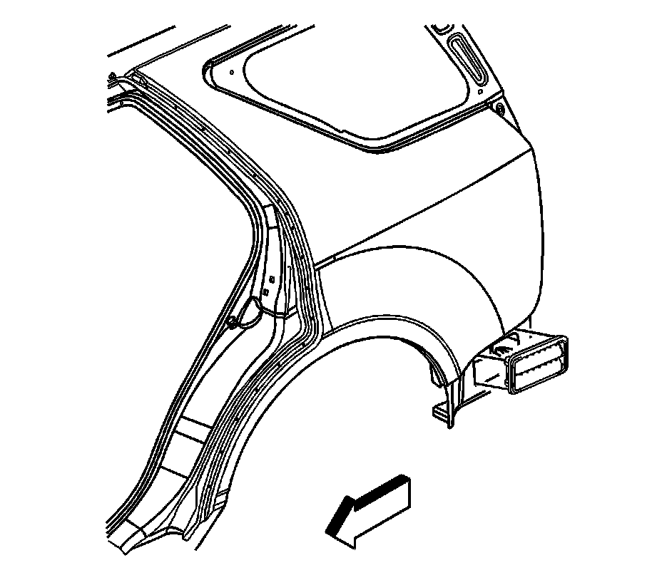

Cabin Ventilation Grille: Service and Repair
Pressure Relief Valve Replacement
Removal Procedure
1. Remove the rear bumper fascia extension. Refer to Rear Bumper Fascia Replacement (Rear Bumper Fascia Replacement) .

2. Lift the lower flap of the pressure relief valve to expose the lower edge clip release tabs.
3. Disengage the clips by inserting a flat-bladed tool into the slots located at the front edge of the clips.
4. Remove the pressure relief valve by pulling the bottom edge of the valve away from the vehicle.
Installation Procedure
1. Position the pressure relief valve to the opening in the rear quarter panel.
2. Press inward on the pressure relief valve until fully seated.
3. Install the rear bumper fascia. Refer to Rear Bumper Fascia Replacement (Rear Bumper Fascia Replacement) .